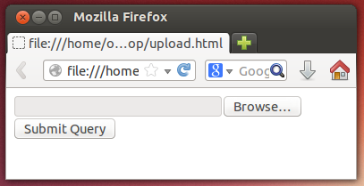
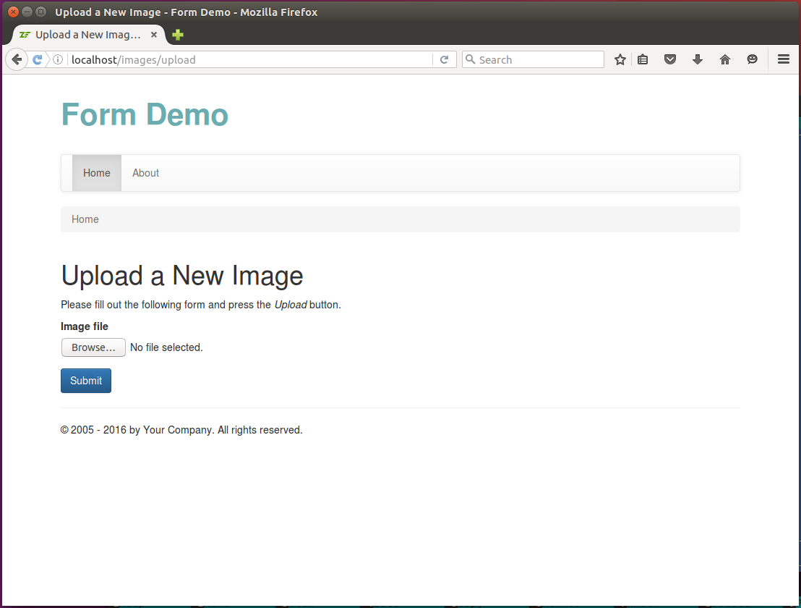
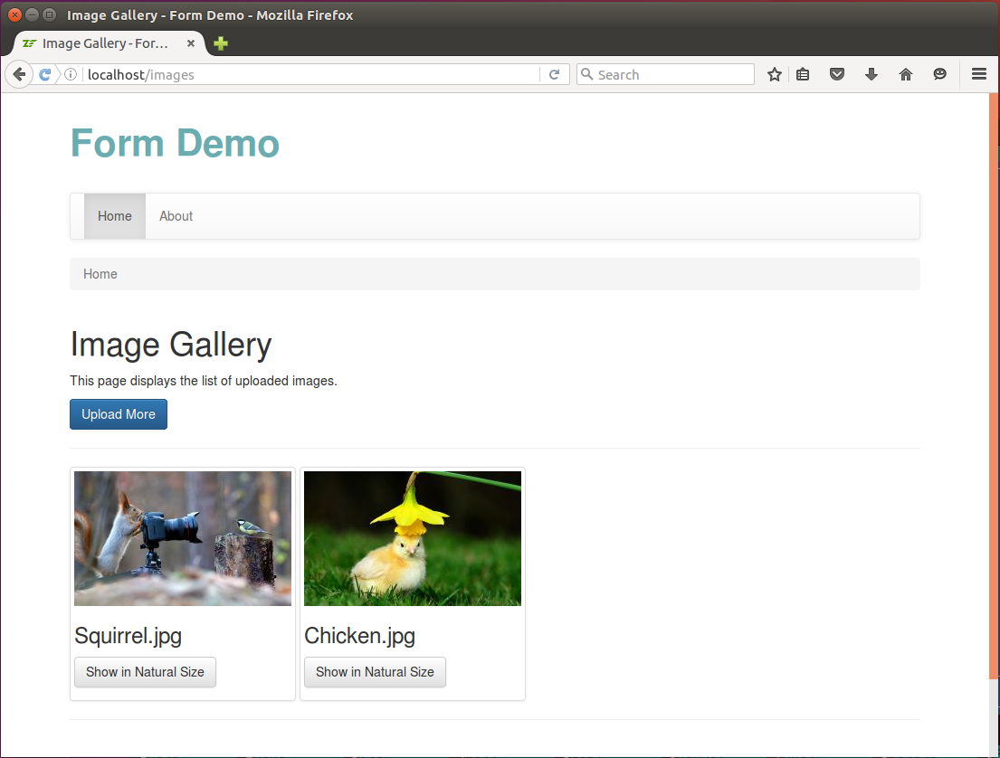
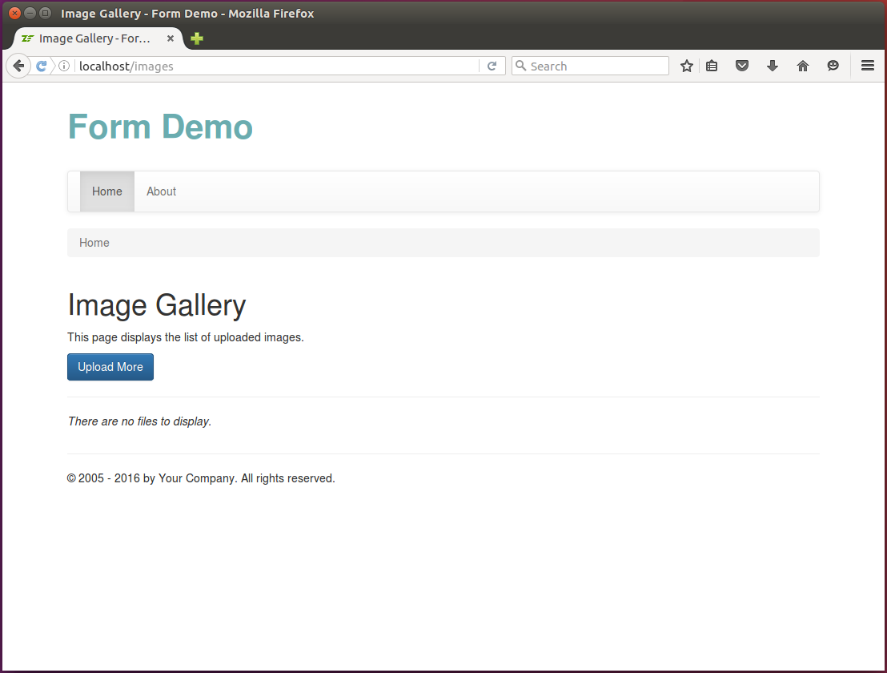
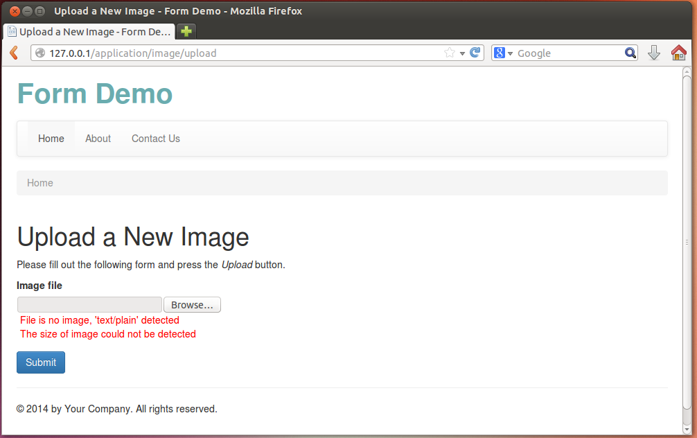
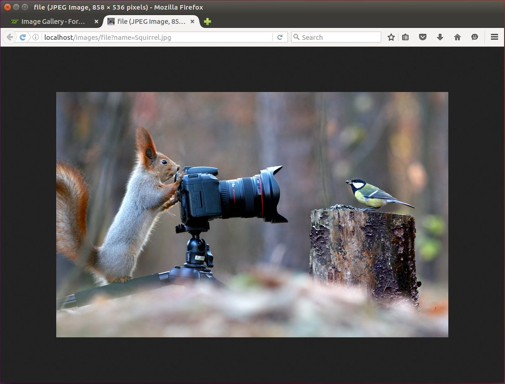

Uploading Files with Forms
In this chapter, you will learn about uploading files with forms. First, we will review the basic theory like HTTP file upload capability and binary content transfer encoding, and then provide a complete working Image Gallery example showing how to upload images to a web server.
Laminas components covered in this chapter:
| Component | Description |
|---|---|
@Laminas\Form |
Contains base form model classes. |
@Laminas\Filter |
Contains various filters classes. |
@Laminas\Validator |
Implements various validator classes. |
@Laminas\InputFilter |
Implements a container for filters/validators. |
About HTTP File Uploads
HTML forms have capability for uploading files of arbitrarily large size 1. The files are typically transmitted through HTTP POST method 2.
By default, HTTP uses the URL encoding for transfers of form data, and you could see how that encoding looks like in previous chapters. However, this encoding is inefficient for uploading large files, since URL-encoding binary data dramatically increases the length of the HTTP request. For the purpose of uploading files, it is instead recommended to use the so called "binary transfer encoding" described in the next section.
HTTP Binary Transfer Encoding
A simple HTML form capable of file uploads is shown in the code example below. The binary
encoding type is enabled by setting the enctype attribute of the form with the value
of "multipart/form-data":
<form action="upload" method="POST" enctype="multipart/form-data">
<input type="file" name="myfile">
<br/>
<input type="submit" name="Submit">
</form>
In line 1, we explicitly set form encoding (enctype attribute) to "multipart/form-data"
to utilize effective binary content transfer encoding for the form.
In line 2, we define an input field with type "file" and name "myfile". This input field will allow site visitor to select the file for upload.
If you now save the above mentioned markup to an .html file and open it in your web browser, you will see the page like in figure 10.1.

The file element has the Browse... button allowing to pick a file for upload. When the site user picks some file and clicks the Submit button on the form, the web browser will send an HTTP request to the web server, and the request will contain the data of the file being uploaded. The example below illustrates how the HTTP request may look like:
POST http://localhost/upload HTTP/1.1
Host: localhost
Content-Length: 488
User-Agent: Mozilla/5.0 (Windows NT 6.1; WOW64)
Content-Type: multipart/form-data; boundary=----j1bOrwgLvOC3dy7o
Accept-Encoding: gzip,deflate,sdch
------j1bOrwgLvOC3dy7o
Content-Disposition: form-data; name="myfile"; filename="Somefile.txt"
Content-Type: text/html
(file binary data goes here)
------j1bOrwgLvOC3dy7o
Content-Disposition: form-data; name="Submit"
Submit Request
------j1bOrwgLvOC3dy7o--
As you can see from the example above, the HTTP request with "multipart/form-data" encoding type looks analogous to a usual HTTP request (has the status line, the headers, and the content area), however it has the following important differences:
-
Line 5 sets the "Content-Type" header with "multipart/form-data" value; The form is assembled of the fields marked by the "boundary" -- a unique randomly generated sequence of characters delimiting form fields of each other.
-
Lines 8-17 represent the content of the HTTP request. The form fields are delimited by the "boundary" sequences (lines 8, 13, 17). The data of the file being uploaded are transmitted in binary format (line 12), and that allows to reduce the content size to its minimum.
W> By default, PHP engine's settings do not allow to upload large files (larger than 2MB). In order to upload
W> large files, you may need to edit the php.ini configuration file and modify the post_max_size
W> and upload_max_filesize parameters (please refer to Appendix A. Configuring Web Development Environment for information on how to do that).
W> Setting these with 100M allows to upload files up to 100 Mb in size, and this would typically be sufficient.
W> If you plan to upload very large files up to 1 GB in size, than better set these with 1024M.
W> Do not forget to restart your Apache Web Server after editing the configuration file.
$_FILES Super-Global Array in PHP
When a site visitor uploads some files to your Apache Web Server, the files are placed to a temporary location
(usually to system temporary directory that is /tmp in Linux and C:\Windows\Temp in Windows).
The PHP script receives the file information to the special super-global array named $_FILES.
The
$_FILESarray is analogous to the$_GETand$_POSTsuper-globals. The latter two are used to store the GET and POST variables, respectively, while the first one is used to store information about uploaded files.
For example, for the above mentioned simple upload form, the $_FILES super-global array will look
as follows (the output is generated with the var_dump() PHP function):
array (size=1)
'myfile' =>
array (size=5)
'name' => string 'somefile.txt' (length=12)
'type' => string 'text/plain' (length=10)
'tmp_name' => string '/tmp/phpDC66.tmp' (length=16)
'error' => int 0
'size' => int 18
As you can see from the example above, the $_FILES array contains an entry per
each uploaded file. For each uploaded file, it contains the following information:
name-- original file name (line 4).type-- MIME 3 type of the file (line 5).tmp_name-- temporary name for the uploaded file (line 6).error-- error code signalling about the status of the upload (line 7); error code zero means the file was uploaded correctly.size-- file size in bytes (line 8).
PHP engine stores the uploaded files in a temporary location which is cleaned up as soon as the PHP
script execution ends. So, if you want to save the uploaded files to some directory for later use,
you need to utilize the move_uploaded_file() PHP function. The move_uploaded_file() function
takes two arguments: the first one is the name of the temporary file, and the second one is the
destination file name.
You might be confused why you cannot use the usual
rename()PHP function for moving the temporary uploaded file to its destination path. PHP has special function for moving uploaded files for security reasons. Themove_uploaded_file()function is analogous torename()function, but it takes some additional checks to ensure the file was really transferred through HTTP POST request, and that the upload process has finished without errors.
The following code example shows how to move the file uploaded with the simple form we have considered above:
$destPath = '/path/to/your/upload/dir';
$result = move_uploaded_file($_FILES['myfile']['tmp_name'], $destPath);
if(!$result) {
// Some error occurred.
}
Above, in line 1, we set the $destPath with the directory name where to save the
uploaded file.
In line 2, we call the move_uploaded_file() function and pass it two arguments: the path to the
temporary file and the destination path.
Specifying the directory name as the second argument of the
move_uploaded_file()function is suitable when you do not want to rename the file. If you need to save the uploaded file under another name than its original name, you can specify the full file path instead of the directory name.
In line 3, we check the returned value of the function. If the operation is successful,
the function will return true. If some error occurs (for example, if directory permissions
are insufficient to save the file), the boolean false will be returned.
Accessing Uploaded Files in Laminas
In your controller class, you typically do not communicate with the $_FILES
array directly, instead you may use the @Request[Laminas\Http\Request] class or the @Params
controller plugin, as shown in code example below:
<?php
//...
class IndexController extends AbstractActionController
{
// An example controller action intended for handling file uploads.
public function uploadAction()
{
// Get the whole $_FILES array.
$files = $this->getRequest()->getFiles();
// The same, but with Params controller plugin.
$files = $this->params()->fromFiles();
// Get a single entry of the $_FILES array.
$files = $this->params()->fromFiles('myfile');
}
}
In line 9 of the code above, we use the getRequest() method of the controller class for accessing
the @Request[Laminas\Http\Request] object, and the getFiles() method of the request object to retrieve the information about
all upload files at once.
In line 12, we do the same thing with the @Params controller plugin. We use its fromFiles() method
to get the information about all uploaded files.
If needed, you can extract the information for the specific file only. In line 15, we use the same
fromFiles() method and pass it the name of the file field to retrieve. This retrieves the single
file entry from the $_FILES super-global array.
File Uploads & Laminas Form Model
To add file uploading capability to your form model, you need to add an element
of the @Laminas\Form\Element\File class as follows:
// Add the following code inside of form's addElements() method.
// Add the "file" field.
$this->add([
'type' => 'file',
'name' => 'file',
'attributes' => [
'id' => 'file'
],
'options' => [
'label' => 'Upload file',
],
]);
In the code above, we call the add() method provided by the @Form[Laminas\Form\Form] base
class and pass it the configuration array describing the element. The
type key of the array (line 5) must be either @Laminas\Form\Element\File
class name or its short alias "file".
Validating Uploaded Files
Uploaded files need to be checked for correctness as any other form data. For example, you may need to check that:
-
the file(s) were really uploaded through HTTP POST request, and were not just copied from some directory;
-
the file(s) were uploaded successfully (the error code is zero);
-
the file names and/or extensions are acceptable (e.g., you may want to save JPEG files only, and reject all others);
-
the file size lies in the allowed range (e.g., you may want to ensure that the file is not too big);
-
total count of uploaded files doesn't exceed some allowed limit.
For doing the checks like above, Laminas provides a number of useful file validators (listed in table 10.1).
Those validator classes belong to @Laminas\Validator component and live in @Laminas\Validator\File[Laminas\Validator] namespace.
| Class name | Short alias | Description |
|---|---|---|
@Count |
FileCount |
Checks whether the file count is in a given range (min, max). |
@WordCount |
FileWordCount |
Calculates the number of words in a file and checks whether it lies in a given range. |
@Upload |
FileUpload |
Performs security checks ensuring that all given files were really uploaded through HTTP POST and there were no upload errors. |
@UploadFile |
FileUploadFile |
Performs security checks ensuring that a file really was uploaded through HTTP POST and there were no upload errors. |
@Size |
FileSize |
Checks whether the file size lies in a given range. |
@FilesSize |
FileFilesSize |
Checks that the summary size of all given files lies in a given range. |
@Extension |
FileExtension |
Checks that the extension of a file belongs to a set of allowed extensions. |
@ExcludeExtension |
FileExcludeExtension |
Checks that the extension of a file DOES NOT belong to a set of extensions. |
@MimeType |
FileMimeType |
Checks that the MIME type of a file belongs to the list of allowed MIME types. |
@ExcludeMimeType |
FileExcludeMimeType |
Checks that the MIME type of a file DOES NOT belong to the list of MIME types. |
@IsImage |
FileIsImage |
Checks that the file is a graphical image (JPEG, PNG, GIF, etc.) |
@ImageSize |
FileImageSize |
Checks that the image file's dimensions lie in a given range. |
@Exists |
FileExists |
Checks whether the file exists on disk. |
@NotExists |
FileNotExists |
Checks whether the file doesn't exist on disk. |
@IsCompressed |
FileIsCompressed |
Checks that the file is an archive (ZIP, TAR, etc.) |
@Hash[Laminas\Validator\File\Hash] |
FileHash |
Checks that the file content matches the given hash(es). |
@Crc32 |
FileCrc32 |
Checks that the file content has the given CRC32 check sum. |
@Sha1 |
FileSha1 |
Checks that the file content has the given SHA-1 hash. |
@Md5 |
FileMd5 |
Checks that the file content has the given MD5 hash. |
Table 10.1. Standard File Validators
As you can see from the table above, file validators may be roughly divided in the following groups:
- validators checking whether the file(s) were really uploaded through HTTP POST and upload status is OK;
- validators checking the uploaded file count and file size;
- validators checking the file extension and MIME type;
- validators checking whether the file is a graphical image and checking image dimensions;
- and validators checking the file hash (or check sum) 4.
Please note that since file validators live in @
Laminas\Validator\File[Laminas\Validator] namespace, their short aliases (that you use when creating a validator with the factory) start withFileprefix. For example, the @IsImagevalidator hasFileIsImagealias.
We will show how to use some of these file validators in the Image Gallery code example later in this chapter.
Filtering Uploaded Files
Laminas Framework provides several filters intended for "transforming" file fields. Those filter
classes (listed in table 10.2) belong to @Laminas\Filter component and live in @Laminas\Filter\File[Laminas\Filter] namespace.
| Class name | Short alias | Description |
|---|---|---|
@Rename |
FileRename |
Renames/moves an arbitrary file. |
@RenameUpload |
FileRenameUpload |
Renames/moves the uploaded file with security checks. |
@Encrypt[Laminas\Filter\File\Encrypt] |
FileEncrypt |
Encrypts a given file and stores the encrypted file content. |
@Decrypt[Laminas\Filter\File\Decrypt] |
FileDecrypt |
Decrypts a given file and stores the decrypted file content. |
@LowerCase |
FileLowerCase |
Converts file content to lower case letters. |
@UpperCase |
FileUpperCase |
Converts file content to upper case letters. |
Table 10.2. Standard File Filters
From the table, you can see that filters can be divided into the following groups:
- filters for moving uploaded files from a temporary location to their persistent directory;
- filters for encryption and decryption of files;
- filters for converting text files to upper-case and lower-case letters.
Please note that since file filters live in @
Laminas\Filter\File[Laminas\Filter] namespace, their short aliases (that you use when creating a filter with the factory) start withFileprefix. For example, the @RenameUploadfilter hasFileRenameUploadalias.
The @Encrypt[Laminas\Filter\File\Encrypt] and @Decrypt[Laminas\Filter\File\Decrypt] filters allow to apply various encryption/decryption algorithms
to the uploaded file (concrete algorithm is attached by specifying the certain adapter). The @LowerCase and
@UpperCase filters are suitable for converting text files to lower- and upper-case, respectively 5.
The @Rename filter allows to rename and/or move an arbitrary file (not only uploaded file).
It uses the rename() PHP function internally, and that's why it is in general not recommended
to use this filter with uploaded files because of security reasons.
The @RenameUpload filter seems to be much more useful than other filters, because it allows to encapsulate
the call of the move_uploaded_file() function and move/rename the uploaded file from a temporary location
to its persistent directory. We will show how to use the @RenameUpload filter in the Image Gallery
code example later in this chapter.
InputFilter Container & File Uploads
As you might remember, the filters and validators attached to a form model are typically
stored in an @InputFilter[Laminas\InputFilter\InputFilter] container which consists of inputs (an input is typically represented
by the @Input[Laminas\InputFilter\Input] class belonging to the @Laminas\InputFilter namespace). For usual form fields, the filters
are executed before validators, and validators are executed after filters.
However, for file uploads, there are some important differences:
- for storing validation rules for uploaded files, a special class called @
FileInputshould be utilized instead of the @Input[Laminas\InputFilter\Input] class; - and, validators are applied before filters (!).
FileInput
For storing validation rules for uploaded files, you must use the @FileInput class instead of the
usual @Input[Laminas\InputFilter\Input] class.
In your form model's addInputFilter() private method, you add the validation rules for the
file input as follows:
$inputFilter->add([
'type' => 'Laminas\InputFilter\FileInput',
'name' => 'file', // Element's name.
'required' => true, // Whether the field is required.
'filters' => [ // Filters.
// Put filter info here.
],
'validators' => [ // Validators.
// Put validator info here.
]
]);
Above, we set the "type" key (line 2) with the value @Laminas\InputFilter\FileInput class name. The
rest of keys is analogous to those we used before when adding validation rules for a form model.
The behaviour of @FileInput class differs from the @Input[Laminas\InputFilter\Input] in the following aspects:
-
It expects the data you pass as input to be in the
$_FILESarray format (an array entry withtmp_name,error,typekeys). -
A @
Laminas\Validator\File\Uploadvalidator is automatically inserted before all other validators into the validator chain of the input. -
The validators inserted to the validator chain of the input are executed before the filters inserted into its filter chain. This is opposite to the behaviour of the @
Input[Laminas\InputFilter\Input] class.
Executing Validators before Filters
For usual form fields, the filters are typically executed before validators, and validators are executed after filters. However, for file uploads, this sequence is opposite.
For file uploads, validators are executed before filters. This behaviour is inverse to the usual behaviour.
When working with uploaded files, we first need to check that data extracted from $_FILES
super-global array is correct, and then do anything else with the files (moving the file into a
storage directory, renaming it, etc.) Because of that, file validators need to be run first turn, and
filters to be executed last.
To see how this is performed, recall the typical workflow for a form:
- First, we call the
setData()method to fill in the form with data. - Call the
isValid()method to execute filters and validators in the input filter attached to form. - On successful validation, call the
getData()to extract the filtered and validated data from the input filter attached to form. - On failure, call the
getMessages()to retrieve the validation error messages.
When using a @FileInput input, the workflow is the same, however it is important to understand what
happens on each of its steps:
- Call the
setData()method to fill in the form with data. - Call the
isValid()method to execute validators in the input filter attached to form. - On successful validation, call the
getData()to execute filters and extract the filtered and validated data from the input filter attached to form. - On failure, call the
getMessages()to retrieve the validation error messages.
Please note that for @
FileInputinput, the attached filters are only run if thegetData()method is called.
When you use both @Input[Laminas\InputFilter\Input] and @FileInput inputs in your form's input filter (which is a common case),
the filters are still executed first for usual inputs, but validators are executed first for file inputs.
Controller Action & File Uploads
In this section, we will provide a short code example showing how to handle file uploads in a controller action method. We will attract reader's attention to the aspects specific to file uploads.
Assume we want to add a web page displaying a form (let's name it YourForm) capable of file uploads.
For that page, we need to add the uploadAction() method to a controller class:
<?php
//...
class IndexController extends AbstractActionController
{
// This is the "upload" action displaying the Upload page.
public function uploadAction()
{
// Create the form model.
$form = new YourForm();
// Check if user has submitted the form.
if($this->getRequest()->isPost()) {
// Make certain to merge the files info!
$request = $this->getRequest();
$data = array_merge_recursive(
$request->getPost()->toArray(),
$request->getFiles()->toArray()
);
// Pass data to form.
$form->setData($data);
// Execute file validators.
if($form->isValid()) {
// Execute file filters.
$data = $form->getData();
// Redirect the user to another page.
return $this->redirect()->toRoute('application', ['action'=>'index']);
}
}
// Render the page.
return new ViewModel([
'form' => $form
]);
}
}
As you can see from the code above, the uploadAction() looks like a usual controller action
implementing a typical form workflow, however it has some aspects specific to file uploads (marked
with bold):
-
In line 9, we create an instance of the
YourFormform model with the help of thenewoperator. -
In line 12, we check whether the request is an HTTP POST request. If so, we get the data from
$_POSTand$_FILESsuper-global PHP arrays and merge them into the single array (lines 15-19). This is required to correctly handle uploaded files, if any. Then we pass this array to the form model with thesetData()method (line 22). -
In line 25, we call the form model's
isValid()method. This method runs the input filter attached to the form model. For @FileInputinputs, this will execute attached validators only. -
If the data is valid, we call the
getData()method (line 28). For the @FileInputinputs, this will run the attached file filters. The file filters, for example, could move the uploaded files to the directory of residence. -
On success, in line 31, we redirect the user to the "index" action of the controller.
In the controller action above, you should remember three things: 1) merge
$_POSTand$_FILESsuper-global arrays before you pass them to the form'ssetData()method; 2) useisValid()form's method to check uploaded files for correctness (run validators); 3) usegetData()form's method to run file filters.
Example: Image Gallery
To demonstrate the usage of file uploads in Laminas Framework, we will create an Image Gallery that will consist of two web pages: the image upload page allowing to upload an image (figure 10.2); and the gallery page containing the list of uploaded images (figure 10.3).
You can see the working Image Gallery example in the Form Demo sample application bundled with this book.
{width=80%} 
{width=80%} 
For this example, we will create the following things:
- the
ImageFormform model capable of image file uploads; - the
ImageManagerservice class designed for getting the list of uploaded images, retrieving information about an image, and resizing an image; - the
ImageControllerclass which will contain action methods serving the web pages; - the
ImageControllerFactoryfactory that will instantiate the controller and inject dependencies into it; - a view template
.phtmlfile per each controller's action method.
Adding ImageForm Model
For this example, we will need a form model which will be used for image file uploads. We will call
that form model class the ImageForm. This class will allow us to upload an image file to the
server. The form will have the following fields:
-
the
filefield will allow the user to pick an image file for upload; -
and the
submitbutton field allowing to send the form data to server.
The code of the ImageForm form model is presented below. It should be put to ImageForm.php file
stored in Form directory under the module's source directory:
<?php
namespace Application\Form;
use Laminas\Form\Form;
// This form is used for uploading an image file.
class ImageForm extends Form
{
// Constructor.
public function __construct()
{
// Define form name.
parent::__construct('image-form');
// Set POST method for this form.
$this->setAttribute('method', 'post');
// Set binary content encoding.
$this->setAttribute('enctype', 'multipart/form-data');
$this->addElements();
}
// This method adds elements to form.
protected function addElements()
{
// Add "file" field.
$this->add([
'type' => 'file',
'name' => 'file',
'attributes' => [
'id' => 'file'
],
'options' => [
'label' => 'Image file',
],
]);
// Add the submit button.
$this->add([
'type' => 'submit',
'name' => 'submit',
'attributes' => [
'value' => 'Upload',
'id' => 'submitbutton',
],
]);
}
}
We have already discussed the form model creation and the code above should not cause any problems in its understanding. We just want to attract the attention of the reader that in line 19, we set the "multipart/form-data" value for the "enctype" attribute of the form to make the form use binary encoding for its data.
Actually, explicitly setting the "enctype" attribute in form's constructor is optional, because @
Laminas\Form\Element\Fileelement performs that automatically when you call form'sprepare()method.
Adding Validation Rules to ImageForm Model
To demonstrate the usage of validators and filters designed to work with file uploads, we will
add those to the ImageForm form model class. We want to achieve the following goals:
- check if the uploaded file really was uploaded through HTTP POST method using the @
UploadFilevalidator; - check that the uploaded file is an image (JPEG, PNG, GIF, etc.) using the @
IsImagevalidator; - check that image dimensions are within some allowed boundaries; we will do that with the @
ImageSizevalidator; - move the uploaded file to its residence directory using the @
RenameUploadfilter.
To add form validation rules, modify the code of the ImageForm class as follows:
<?php
namespace Application\Form;
use Laminas\InputFilter\InputFilter;
// This form is used for uploading an image file.
class ImageForm extends Form
{
// Constructor
public function __construct()
{
// ...
// Add validation rules
$this->addInputFilter();
}
// ...
// This method creates input filter (used for form filtering/validation).
private function addInputFilter()
{
$inputFilter = new InputFilter();
$this->setInputFilter($inputFilter);
// Add validation rules for the "file" field.
$inputFilter->add([
'type' => 'Laminas\InputFilter\FileInput',
'name' => 'file',
'required' => true,
'validators' => [
['name' => 'FileUploadFile'],
[
'name' => 'FileMimeType',
'options' => [
'mimeType' => ['image/jpeg', 'image/png']
]
],
['name' => 'FileIsImage'],
[
'name' => 'FileImageSize',
'options' => [
'minWidth' => 128,
'minHeight' => 128,
'maxWidth' => 4096,
'maxHeight' => 4096
]
],
],
'filters' => [
[
'name' => 'FileRenameUpload',
'options' => [
'target' => './data/upload',
'useUploadName' => true,
'useUploadExtension' => true,
'overwrite' => true,
'randomize' => false
]
]
],
]);
}
}
In the code above, we add the following file validators:
-
@
UploadFilevalidator (line 32) checks whether the uploaded file was really uploaded using the HTTP POST method. -
@
MimeTypevalidator (line 34) checks whether the uploaded file is a JPEG or PNG image. It does that by extracting MIME information from file data. -
@
IsImagevalidator (line 39) checks whether the uploaded file is an image file (PNG, JPG, etc.). It does that by extracting MIME information from file data. -
@
ImageSizevalidator (line 41) allows to check that image dimensions lie in an allowed range. In the code above, we check that the image is between 128 pixels and 4096 pixels in width, and that the image height lies between 128 pixels and 4096 pixels.
In line 52, we add the @RenameUpload filter and configure it to save the uploaded file to
the APP_DIR/data/upload directory. The filter will use the same file name for the destination file
as the name of the original file (useUploadName option). If the file with such name already
exists, the filter will overwrite it (overwrite option).
W> For the @MimeType and @IsImage validator to work, you have to enable PHP fileinfo extension. This extension
W> is already enabled in Linux Ubuntu, but not in Windows. After that, do not forget to restart Apache HTTP Server.
Writing ImageManager Service
Because we strive to write code conforming to Domain Driven Design pattern, we will
create a service model class encapsulating the functionality for image management. We will
call this class ImageManager and put it to Application\Service namespace. We will also
register this service in the service manager component of the web application.
The ImageManager service class will have the following public methods (listed in table 10.3):
| Method | Description |
|---|---|
getSaveToDir() |
Returns path to the directory where we save the image files. |
getSavedFiles() |
Returns the array of saved file names. |
getImagePathByName($fileName) |
Returns the path to the saved image file. |
getImageFileInfo($filePath) |
Retrieves the file information (size, MIME type) by image path. |
getImageFileContent($filePath) |
Returns the image file content. On error, returns boolean false. |
resizeImage($filePath, $desiredWidth) |
Resizes the image, keeping its aspect ratio. |
Table 10.3. Public methods of the ImageManager class.
In fact, we could put the code we plan to add into the service into the controller actions, but that would make the controller fat and poorly testable. By introducing the service class, we improve the separation of concerns and code reusability.
Add the ImageManager.php file to the Service directory under the module's source directory. Add the following code to the file:
<?php
namespace Application\Service;
// The image manager service.
class ImageManager
{
// The directory where we save image files.
private $saveToDir = './data/upload/';
// Returns path to the directory where we save the image files.
public function getSaveToDir()
{
return $this->saveToDir;
}
}
As you can see from the code above, we define the ImageManager class in line 5. It has the private
$saveToDir property 6 which contains the path to the directory containing our uploaded
files (line 8) (we store uploaded files in APP_DIR/data/upload directory).
The getSaveToDir() public method (line 11) allows to retrieve the path to the upload directory.
Next, we want to add the getSavedFiles() public method to the service class. The method will scan
the upload directory and return an array containing the names of the uploaded files. To add the
getSavedFiles() method, modify the code in the following way:
<?php
//...
// The image manager service.
class ImageManager
{
//...
// Returns the array of uploaded file names.
public function getSavedFiles()
{
// The directory where we plan to save uploaded files.
// Check whether the directory already exists, and if not,
// create the directory.
if(!is_dir($this->saveToDir)) {
if(!mkdir($this->saveToDir)) {
throw new \Exception('Could not create directory for uploads: ' .
error_get_last());
}
}
// Scan the directory and create the list of uploaded files.
$files = [];
$handle = opendir($this->saveToDir);
while (false !== ($entry = readdir($handle))) {
if($entry=='.' || $entry=='..')
continue; // Skip current dir and parent dir.
$files[] = $entry;
}
// Return the list of uploaded files.
return $files;
}
}
In the getSavedFiles() method above, we first check if the upload directory exists (line 16), and if not,
we try to create it (line 17). Then, we get the list of files in the directory (lines 24-32) and
return it to the caller.
Next, we add the three methods for getting information about an uploaded file:
-
the
getImagePathByName()method will take the file name and prepend the path to upload directory to that file name; -
the
getImageFileInfo()method will retrieve MIME information about the file and its size in bytes; -
and the
getImageFileContent()will read file data and return them as a string.
To add those three methods, change the code as follows:
<?php
//...
// The image manager service.
class ImageManager
{
//...
// Returns the path to the saved image file.
public function getImagePathByName($fileName)
{
// Take some precautions to make file name secure.
$fileName = str_replace("/", "", $fileName); // Remove slashes.
$fileName = str_replace("\\", "", $fileName); // Remove back-slashes.
// Return concatenated directory name and file name.
return $this->saveToDir . $fileName;
}
// Returns the image file content. On error, returns boolean false.
public function getImageFileContent($filePath)
{
return file_get_contents($filePath);
}
// Retrieves the file information (size, MIME type) by image path.
public function getImageFileInfo($filePath)
{
// Try to open file
if (!is_readable($filePath)) {
return false;
}
// Get file size in bytes.
$fileSize = filesize($filePath);
// Get MIME type of the file.
$finfo = finfo_open(FILEINFO_MIME);
$mimeType = finfo_file($finfo, $filePath);
if($mimeType===false)
$mimeType = 'application/octet-stream';
return [
'size' => $fileSize,
'type' => $mimeType
];
}
}
Finally, we want to add the image resizing functionality to the ImageManager class. The image
resizing functionality will be used for creating small thumbnail images. Add the resizeImage()
method to the ImageManager class as follows:
<?php
//...
class ImageManager
{
//...
// Resizes the image, keeping its aspect ratio.
public function resizeImage($filePath, $desiredWidth = 240)
{
// Get original image dimensions.
list($originalWidth, $originalHeight) = getimagesize($filePath);
// Calculate aspect ratio
$aspectRatio = $originalWidth/$originalHeight;
// Calculate the resulting height
$desiredHeight = $desiredWidth/$aspectRatio;
// Get image info
$fileInfo = $this->getImageFileInfo($filePath);
// Resize the image
$resultingImage = imagecreatetruecolor($desiredWidth, $desiredHeight);
if (substr($fileInfo['type'], 0, 9) =='image/png')
$originalImage = imagecreatefrompng($filePath);
else
$originalImage = imagecreatefromjpeg($filePath);
imagecopyresampled($resultingImage, $originalImage, 0, 0, 0, 0,
$desiredWidth, $desiredHeight, $originalWidth, $originalHeight);
// Save the resized image to temporary location
$tmpFileName = tempnam("/tmp", "FOO");
imagejpeg($resultingImage, $tmpFileName, 80);
// Return the path to resulting image.
return $tmpFileName;
}
}
The resizeImage() method above takes two arguments: $filePath (the path to the image file),
and $desiredWidth (the width of the thumbnail image). Inside the method, we first calculate
an appropriate thumbnail image height (lines 11-16) preserving its aspect ratio. Then, we resize the
original image as needed and save it to a temporary file (lines 19-32).
As the ImageManager class is ready, you have to register the ImageManager service in the service
manager component of the web application by adding the following lines to the module.config.php
configuration file:
<?php
return [
// ...
'service_manager' => [
// ...
'factories' => [
// Register the ImageManager service
Service\ImageManager::class => InvokableFactory::class,
],
],
// ...
];
Adding ImageController
For the Image Gallery example, we will create the ImageController controller class. The controller
will have the following action methods (listed in table 10.4):
| Action Method | Description |
|---|---|
__construct() |
Will allow to inject ImageManager dependency into the controller. |
uploadAction() |
Shows the image upload page allowing to upload a single image. |
indexAction() |
Displays the image gallery page with the list of uploaded images. |
fileAction() |
Provides an ability to download a full-size image or a small thumbnail for an image. |
Table 10.4. Action methods of the ImageController class.
To start, create the ImageController.php file in the Application/Controller directory under the module's source directory. Put the following stub code into the file:
<?php
namespace Application\Controller;
use Laminas\Mvc\Controller\AbstractActionController;
use Laminas\View\Model\ViewModel;
use Application\Form\ImageForm;
// This controller is designed for managing image file uploads.
class ImageController extends AbstractActionController
{
// The image manager.
private $imageManager;
// The constructor method is used for injecting the dependencies
// into the controller.
public function __construct($imageManager)
{
$this->imageManager = $imageManager;
}
// This is the default "index" action of the controller. It displays the
// Image Gallery page which contains the list of uploaded images.
public function indexAction()
{
}
// This action shows the image upload form. This page allows to upload
// a single file.
public function uploadAction()
{
}
// This is the 'file' action that is invoked when a user wants to
// open the image file in a web browser or generate a thumbnail.
public function fileAction()
{
}
}
In the code above, we defined the ImageController class living in the Application\Controller
namespace and added the constructor method and three action method stubs into the class: indexAction(),
uploadAction() and fileAction(). Next, we will populate those action methods
with the code.
Adding Upload Action & Corresponding View Template
First, we will complete the uploadAction() method of our controller. This action method will handle the
Upload a New Image web page containing the upload form. The form will provide an ability to upload an
image file to the gallery.
Change the ImageController.php file as follows:
<?php
//...
class ImageController extends AbstractActionController
{
//...
public function uploadAction()
{
// Create the form model.
$form = new ImageForm();
// Check if user has submitted the form.
if($this->getRequest()->isPost()) {
// Make certain to merge the files info!
$request = $this->getRequest();
$data = array_merge_recursive(
$request->getPost()->toArray(),
$request->getFiles()->toArray()
);
// Pass data to form.
$form->setData($data);
// Validate form.
if($form->isValid()) {
// Move uploaded file to its destination directory.
$data = $form->getData();
// Redirect the user to "Image Gallery" page.
return $this->redirect()->toRoute('images');
}
}
// Render the page.
return new ViewModel([
'form' => $form
]);
}
}
In the uploadAction() method above, we do the following.
In line 9, we create an instance of the ImageForm form model with the help of the new operator.
In line 12, we check whether the request is an HTTP POST request. If so, we get the data from $_POST
and $_FILES super-global PHP arrays and merge them into the single array (lines 15-19). This is
required to correctly handle uploaded files, if any. Then we pass this array to the form model with
the setData() method (line 22).
In line 25, we call the form model's isValid() method. This method runs the input filter attached to the form model. Since
we have only one file input in the input filter, this will only run our three file validators:
@UploadFile, @IsImage and @ImageSize.
If the data is valid, we call the getData() method (line 28). For our file field, this will run the
@RenameUpload filter, which moves our uploaded file to its persistent directory.
After that, in line 31, we redirect the user to the "index" action of the controller (we will populate that action method a little bit later.
Now, its time to add the view template for the "upload" action. Add the upload.phtml view template file under the application/image directory under the module's view directory:
<?php
$form = $this->form;
$form->get('submit')->setAttributes(['class'=>'btn btn-primary']);
$form->prepare();
?>
<h1>Upload a New Image</h1>
<p>
Please fill out the following form and press the <i>Upload</i> button.
</p>
<div class="row">
<div class="col-md-6">
<?= $this->form()->openTag($form); ?>
<div class="form-group">
<?= $this->formLabel($form->get('file')); ?>
<?= $this->formElement($form->get('file')); ?>
<?= $this->formElementErrors($form->get('file')); ?>
<div class="hint">(PNG and JPG formats are allowed)</div>
</div>
<?= $this->formElement($form->get('submit')); ?>
<?= $this->form()->closeTag(); ?>
</div>
</div>
In the code of the view template, we first set "class" attribute (line 3). This is to apply nice-looking Twitter Bootstrap styles to the form's Submit button.
Then, we render the form with the common view helpers that we discussed in Collecting User Input with Forms.
For rendering the "file" field, we use the generic @FormElement view helper.
Typically, you use the @
FormElementgeneric view helper for rendering the file field. The @FormElementinternally calls the @FormFileview helper, which performs the actual rendering.
Adding Index Action & Corresponding View Template
The second action method we will complete is the indexAction(). This action will handle the
Image Gallery page containing the list of uploaded files and their small thumbnails. For each
image, there will be a button "Show In Natural Size" for opening the image in another tab of the web
browser.
Change the ImageController.php file as follows:
<?php
//...
class ImageController extends AbstractActionController
{
//...
public function indexAction()
{
// Get the list of already saved files.
$files = $this->imageManager->getSavedFiles();
// Render the view template.
return new ViewModel([
'files'=>$files
]);
}
}
In the code above, we use the getSavedFiles() method of the ImageManager class for retrieving
the list of uploaded images and pass them to the view for rendering.
Please note how "slim" and clear this controller action is! We achieved this by moving the image management functionality to the
ImageManagerservice model.
Add the index.phtml view template to application/image directory under the module's view directory. The contents of the file is shown below:
<h1>Image Gallery</h1>
<p>
This page displays the list of uploaded images.
</p>
<p>
<a href="<?= $this->url('images', ['action'=>'upload']); ?>"
class="btn btn-primary" role="button">Upload More</a>
</p>
<hr/>
<?php if(count($files)==0): ?>
<p>
<i>There are no files to display.</i>
</p>
<?php else: ?>
<div class="row">
<div class="col-sm-6 col-md-12">
<?php foreach($files as $file): ?>
<div class="img-thumbnail">
<img src="<?= $this->url('images', ['action'=>'file'],
['query'=>['name'=>$file, 'thumbnail'=>true]]); ?>">
<div class="caption">
<h3><?php echo $file; ?></h3>
<p>
<a target="_blank" href="<?= $this->url('images', ['action'=>'file'],
['query'=>['name'=>$file]]); ?>"
class="btn btn-default" role="button">Show in Natural Size</a>
</p>
</div>
</div>
<?php endforeach; ?>
</div>
</div>
<?php endif; ?>
<hr/>
In the code above, we create the HTML markup for the Upload More button.
Under the button, we use check whether the $files array is empty. If the array is empty,
we output the "There are no files to display" message; otherwise we walk through the files and output
the thumbnails of each uploaded images.
For rendering a thumbnail, we use the <img> tag. We set its src attribute with the URL pointing
to the "file" action of our ImageController controller. We pass two parameters to the action via
the query part of the URL: the image name and thumbnail flag.
For styling the thumbnails, we use the Twitter Bootstrap provided ".img-thumbnail" CSS class.
For additional information about these Twitter Bootstrap styles, please refer to the Bootstrap official documentation.
Below each thumbnail, we put the "Show in Natural Size" link, which points to the "file" action
of our ImageController controller. When site visitor clicks the link, he will be shown with the
image in natural size, and the image will be opened in another browser's tab (note the
target="_blank" attribute of the link).
Adding File Action
The last action we will populate is the ImageController::fileAction() method. That method will
allow to preview an uploaded image or generate a small thumbnail of the image. The action method
will take two GET parameters:
- the "name" parameter defines the file name for preview;
- the "thumbnail" parameter is a flag telling whether we want to dump the full image or its small copy.
Change the ImageController.php file as follows:
<?php
//...
class ImageController extends AbstractActionController
{
//...
public function fileAction()
{
// Get the file name from GET variable.
$fileName = $this->params()->fromQuery('name', '');
// Check whether the user needs a thumbnail or a full-size image.
$isThumbnail = (bool)$this->params()->fromQuery('thumbnail', false);
// Get path to image file.
$fileName = $this->imageManager->getImagePathByName($fileName);
if($isThumbnail) {
// Resize the image.
$fileName = $this->imageManager->resizeImage($fileName);
}
// Get image file info (size and MIME type).
$fileInfo = $this->imageManager->getImageFileInfo($fileName);
if ($fileInfo===false) {
// Set 404 Not Found status code
$this->getResponse()->setStatusCode(404);
return;
}
// Write HTTP headers.
$response = $this->getResponse();
$headers = $response->getHeaders();
$headers->addHeaderLine("Content-type: " . $fileInfo['type']);
$headers->addHeaderLine("Content-length: " . $fileInfo['size']);
// Write file content.
$fileContent = $this->imageManager->getImageFileContent($fileName);
if($fileContent!==false) {
$response->setContent($fileContent);
} else {
// Set 500 Server Error status code.
$this->getResponse()->setStatusCode(500);
return;
}
if($isThumbnail) {
// Remove temporary thumbnail image file.
unlink($fileName);
}
// Return Response to avoid default view rendering.
return $this->getResponse();
}
}
In the code above, we first get the "name" and "thumbnail" parameters from $_GET super-global
array (lines 9, 12). If the parameters are missing, their default values are used instead.
In line 15, we use the getImagePathByName() method provided by the ImageManager service to
get the absolute path to the image by its name.
If a thumbnail is requested, we resize the image with the resizeImage() method of the
ImageManager (line 20). That method returns path to a temporary file containing the thumbnail image.
Then, we get the information about the image file (its MIME type and file size) with the
getImageFileInfo() method of the ImageManager (line 24).
Finally, we create a @Response[Laminas\Http\PhpEnvironment\Response] object, fill its headers with image information,
set its content with data of the image file (lines 32-45), and return the @Response[Laminas\Http\PhpEnvironment\Response] object from the controller
action (line 53).
Note that returning the @
Response[Laminas\Http\PhpEnvironment\Response] object disables the default rendering of the view template for this action method. By this reason, we do not create the file.phtml view template file.
Creating Factory for the Controller
Because our ImageController uses the ImageManager service, we need to somehow pass it the instance of
the ImageManager (to inject the dependency into the controller's constructor). We do this with the help
of factory.
Create the ImageControllerFactory.php file under the Controller/Factory subdirectory under the module's source
directory. Put the following code into the file:
<?php
namespace Application\Controller\Factory;
use Interop\Container\ContainerInterface;
use Laminas\ServiceManager\Factory\FactoryInterface;
use Application\Service\ImageManager;
use Application\Controller\ImageController;
/**
* This is the factory for ImageController. Its purpose is to instantiate the
* controller.
*/
class ImageControllerFactory implements FactoryInterface
{
public function __invoke(ContainerInterface $container,
$requestedName, array $options = null)
{
$imageManager = $container->get(ImageManager::class);
// Instantiate the controller and inject dependencies
return new ImageController($imageManager);
}
}
Registering the ImageController
To let Laminas know about our controller, register the ImageController in the module.config.php configuration file:
<?php
return [
//...
'controllers' => [
'factories' => [
Controller\ImageController::class =>
Controller\Factory\ImageControllerFactory::class,
//...
],
],
//...
];
Creating Route
We need to add a route for our ImageController controller. To do that, modify the module.config.php file
as follows:
<?php
return [
//...
'router' => [
'routes' => [
'images' => [
'type' => Segment::class,
'options' => [
'route' => '/images[/:action]',
'constraints' => [
'action' => '[a-zA-Z][a-zA-Z0-9_-]*'
],
'defaults' => [
'controller' => Controller\ImageController::class,
'action' => 'index',
],
],
],
],
],
//...
];
After that, you will be able to get access to our image gallery by the URL like "http://localhost/images", "http://localhost/images/upload" or "http://localhost/images/file".
Results
Finally, adjust directory permissions to make the APP_DIR/data directory writeable by the Apache Web Server.
In Linux Ubuntu, this is typically accomplished by the following shell commands (replace the APP_DIR
placeholder with the actual directory name of your web application):
chown -R www-data:www-data APP_DIR/data
chmod -R 775 APP_DIR/data
Above, the chown and chmod commands set the Apache user to be the owner of the directory and
allow the web server to write to the directory, respectively.
If you now enter the URL http://localhost/images into your web browser's navigation bar, you will see the image gallery page like shown in figure 10.4.
{width=80%} 
Clicking the Upload More button will open the Upload a New Image page where you can peek an image file for upload. If you pick an unacceptable file (not an image, or too big image), you will see validation errors (see the figure 10.5 below).
{width=80%} 
If the upload is completed successfully, you will be redirected back to the Image Gallery page and see the uploaded image in the list of thumbnails. Clicking the View Full Size button will open the image in a new browser tab (see the figure 10.6 below for example).
{width=80%} 
You may find the Image Gallery complete example in the Form Demo sample web application bundled with this book.
Summary
File uploads is a standard HTML form feature. Uploading files is accomplished by setting form content encoding to binary encoding type. Laminas Framework provides convenient functionality for doing file uploads and validating the uploaded files.
-
HTTP file uploads are described in RFC-1867. This mechanism allows to upload large files by using binary content transfer encoding. The "multipart/form-data" encoding type is utilized for this purpose. ↩
-
The HTTP GET method is inefficient for file uploads, because URL length has some upper limit. Also, URL-encoding the file data greatly increases the URL length. ↩
-
MIME type, also known as "content type" is a standard identifier used on the Internet to indicate the type of data that a file contains. For example the "text/plain" MIME type is assigned to a text file, while the "application/octet-stream" MIME type is assigned to a binary file. ↩
-
A file hash is used for checking file data integrity (for example, to ensure that file data is not corrupted). There are several hash algorithms available (MD5, SHA-1, CRC32, etc.) ↩
-
In the author's opinion, the above mentioned four filters are not very useful when working with uploaded files, because you rarely need to encrypt an uploaded file or convert it to lower case letters. ↩
-
Although the
ImageManagerclass is a service and focused on providing services, it can have properties intended for its internal use. ↩